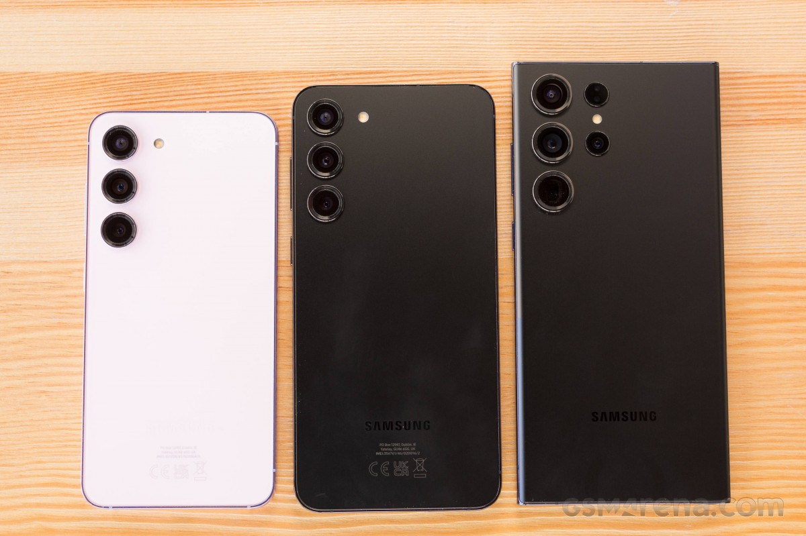
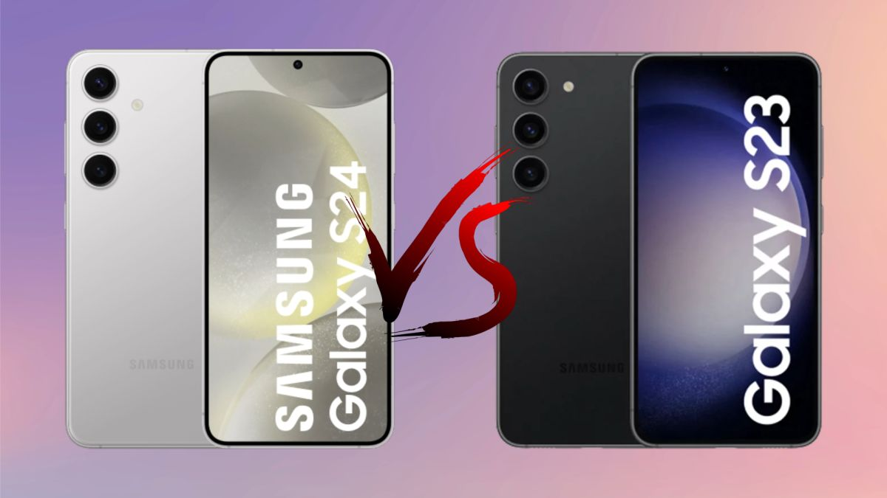
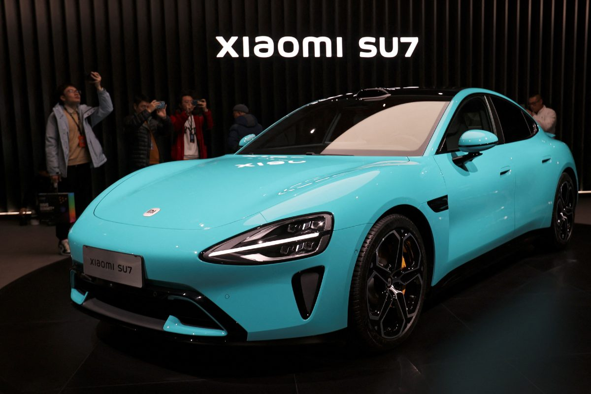

Galaxy S24, S24 Plus e S24 Ultra são lançados pela Samsung; veja preços
A Samsung lançou, nesta quarta-feira (17), o Galaxy S24 no Brasil com preço sugerido de R$ 5.999.
Saiba maisBem vindo ao Rei Tech, site de notícia. tudo sobre tecnologia!.
A Samsung lançou, nesta quarta-feira (17), o Galaxy S24 no Brasil com preço sugerido de R$ 5.999.
Saiba maisNovo Galaxy 24 Ultra, principal rival do iPhone 15 Pro e 15 Pro Max, está 5% mais caro em relação ao S23 Ultra no período em que foi oficializado.
 Saiba maisAs diferenças entre o Galaxy S23 e S24, recém lançado, são sutis mas a nova geração tem uma carta na manga que o torna muito superior.
 saiba maisDos smartphones para a mobilidade elétrica: a Xiaomi finalmente revelou de forma oficial seu primeiro carro elétrico, o Xiaomi SU7, um sedã com 800 km de autonomia.
 saiba mais